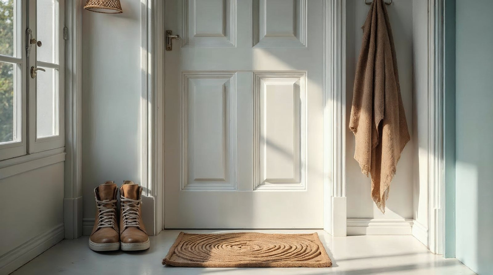
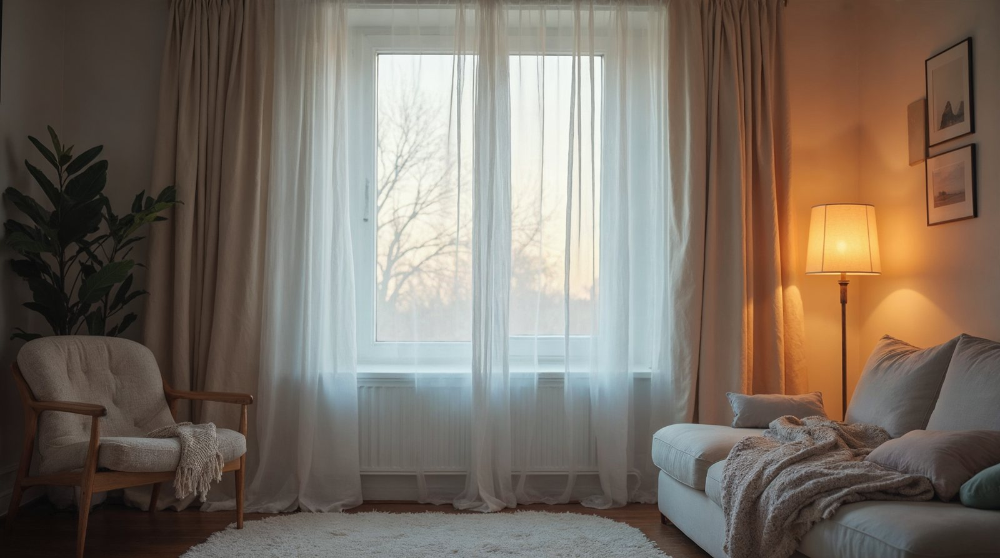
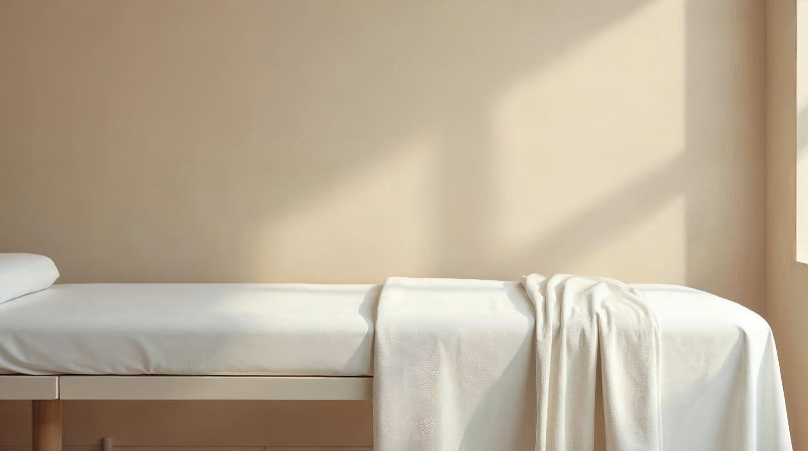
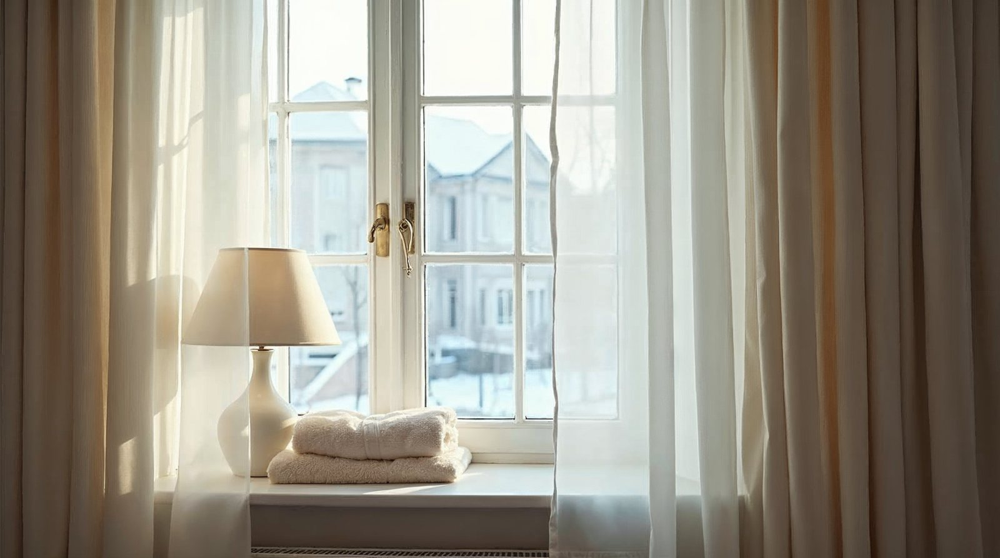
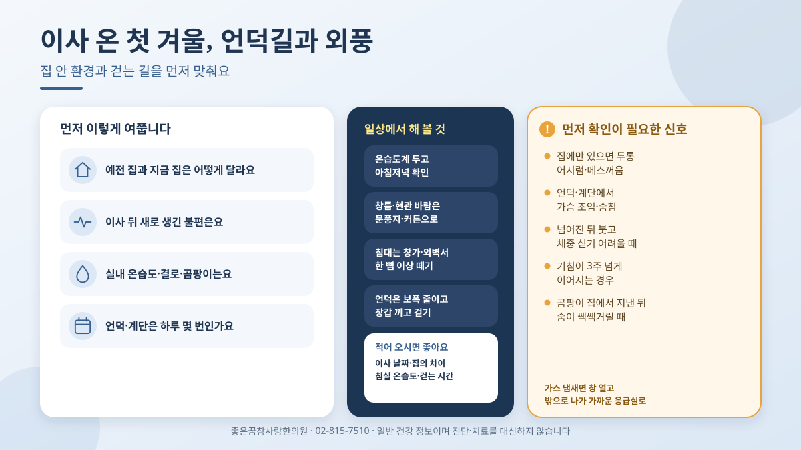

이종호 한의사 감수좋은꿈참사랑한의원 대표원장 (한의사 면허번호 19769)발행 2026-11-27 · 수정 2026-11-27
이 글의 차례
가을이나 초겨울에 상도동이나 노량진 같은 동작구 쪽으로 이사 와서 처음 겨울을 맞는 분들이 계세요. 아침마다 코가 막히고 어깨가 움츠러들고, 퇴근길 언덕을 오르면 종아리와 무릎이 무겁고, 잠도 예전 집보다 얕게 느껴진다고들 하시죠. 짐 정리도 다 못 했는데 몸까지 말을 안 들으니 속상하실 거예요.
원래 그래요. 몸이 새 환경에 아직 적응하는 중일 가능성이 크거든요. 이사 온 첫 겨울에는 창틈과 벽으로 드는 외풍, 창가의 결로와 곰팡이, 난방으로 건조해진 공기, 언덕과 계단이 많은 길, 바뀐 출퇴근 경로, 짐 정리로 흐트러진 생활 리듬이 한꺼번에 겹치기 쉬워요.
저는 이걸 새 신발에 빗대곤 해요. 좋은 신발이라도 처음 며칠은 뒤꿈치가 쓸리잖아요. 신발이 나빠서가 아니라 발과 신발이 아직 서로를 모르는 거예요. 새 집과 새 길도 몸한테는 그런 시간이 필요한 거죠.
그래서 처음 2주는 집 안 온도와 습도, 잠자리 위치부터 맞춰 보시고, 언덕길은 보폭을 줄여 천천히 오르내리세요. 동네의 응급실과 늦게 여는 약국, 내과, 한의원 위치를 미리 알아 두는 것도 이때 해 두시면 좋아요.
대부분은 집과 길에 익숙해지면서 차츰 편해지는 경우가 많아요. 다만 한 달이 지나도 잠과 소화, 몸의 냉기가 계속 흔들린다면 생활 전체를 한번 같이 정리해 볼 때예요.
왜 이사 온 첫 겨울에 몸이 더 힘들까요
- 집마다 창호와 단열, 방향, 층수가 달라 같은 온도로 난방해도 체감은 크게 다릅니다. 창틈과 현관, 오래된 창틀로 드는 찬 바람은 자는 동안 목과 어깨를 움츠리게 만들어 아침 결림으로 이어지기 쉽습니다.
- 바깥과 실내 온도 차가 큰 창가와 북쪽 벽에는 물방울이 맺히는 결로가 생기기 쉽고, 그대로 두면 곰팡이로 이어져 코막힘과 기침의 계기가 될 수 있습니다.
- 상도동과 그 주변은 언덕과 계단이 많은 길이 이어집니다. 평지에 살다 온 분은 같은 거리라도 종아리와 허벅지, 무릎에 실리는 힘이 커지고, 겨울에는 얼어붙은 그늘진 골목에서 미끄러지지 않으려고 몸에 힘이 더 들어갑니다.
- 출퇴근 경로가 바뀌면 일어나는 시각, 마을버스나 지하철을 기다리는 시간, 환승 계단의 수가 달라집니다. 몸은 이런 작은 변화에도 리듬을 다시 맞추는 데 시간이 걸립니다.
- 이사 전후 몇 주는 짐 싸기와 정리로 무리하기 쉽고, 연말 일정까지 겹치면 피로가 풀릴 틈이 줄어듭니다.
- 낯선 동네에서는 아플 때 어디로 가야 할지 몰라 참고 넘기거나, 아는 사람이 없어 마음이 가라앉기도 합니다. 마음의 긴장도 잠과 소화에 영향을 줍니다.
- 한의학에서는 사는 곳의 바람과 찬 기운, 습기와 건조함이 몸에 스며든다고 보아, 환경이 바뀐 뒤 몸의 찬 정도와 소화, 잠이 어떻게 달라졌는지를 함께 살핍니다.

먼저 이렇게 여쭙니다
- 언제 이사했는지, 예전에는 어떤 집(층수, 방향, 아파트나 빌라, 원룸 등)에 살았고 지금 집은 어떤지 여쭙니다.
- 이사 뒤 새로 생기거나 심해진 불편(코막힘, 기침, 어깨 결림, 무릎이나 종아리 무거움, 잠, 소화)을 여쭙니다.
- 지금 집의 실내 온도와 습도, 창가 결로나 곰팡이 냄새가 있는지, 침대나 이부자리가 창가나 외벽 쪽에 붙어 있는지 여쭙니다.
- 출퇴근 경로와 걷는 시간, 언덕이나 계단을 하루 몇 번 오르내리는지 여쭙니다.
- 이사 전후로 무거운 짐을 많이 들었는지, 그 뒤 허리나 손목에 남은 불편이 있는지 여쭙니다.
- 잠드는 시각과 깨는 시각이 예전과 어떻게 달라졌는지, 낯선 소리나 빛 때문에 깨는지 여쭙니다.
- 동네에 다니는 병원이나 약국이 정해졌는지, 지병과 복용 약 처방은 어디서 이어 받고 있는지 확인합니다.

일상에서 먼저 해 볼 수 있는 것
이사 후 첫 주: 집 안 환경 맞추기
- 온습도계를 하나 두고 거실과 침실의 온도와 습도를 아침저녁으로 봅니다. 실내 온도는 20도 안팎, 습도는 40~60%를 목표로 합니다.
- 창틈과 현관 아래로 바람이 들어오는지 손바닥을 대 보고, 문풍지나 창문 단열 필름, 바닥까지 내려오는 두꺼운 커튼으로 막습니다.
- 침대나 이부자리를 창가와 외벽에서 한 뼘 이상 떼어 놓고, 머리 쪽이 창을 향하지 않게 둡니다.
- 가구와 옷장은 외벽에서 5~10cm쯤 띄워 공기가 돌게 하면 결로와 곰팡이를 줄이는 데 도움이 됩니다.
- 하루 2~3번, 한 번에 5~10분씩 맞은편 창을 함께 열어 환기합니다. 요리하거나 샤워한 뒤에는 환풍기를 켜 습기를 빼 줍니다.
- 처음 쓰는 집의 보일러는 외출 기능과 예약 기능을 미리 익혀 둡니다. 한파 예보가 있는 날에는 관리사무소나 집주인이 알려 준 동파 예방 방법을 확인해 둡니다.
첫 2주: 언덕길과 출퇴근길에 몸 맞추기
- 언덕을 오를 때는 보폭을 평소의 3분의 2쯤으로 줄이고, 상체를 살짝 앞으로 기울여 발바닥 전체로 디딥니다. 내리막에서는 무릎을 살짝 굽힌 채 천천히 걷습니다.
- 손은 주머니에서 빼고 장갑을 끼고 다닙니다. 미끄러질 때 손으로 짚을 수 있어야 하고, 움츠린 어깨도 덜 굳습니다.
- 바닥이 미끄럽지 않은 겨울 신발을 고르고, 해가 진 뒤에는 그늘진 골목과 계단이 얼어 있을 수 있어 난간이 있는 길로 돌아갑니다.
- 출퇴근길에 언덕을 피할 수 있는 길, 마을버스 정류장, 계단 대신 경사로가 있는 길을 주말 낮에 한 번 천천히 걸어 익혀 둡니다.
- 퇴근 뒤 종아리가 무거우면 샤워할 때 따뜻한 물을 종아리에 1~2분 대고, 잠들기 전 벽을 짚고 종아리를 20~30초씩 늘려 줍니다.
첫 달: 생활 리듬 다시 세우기
- 일어나는 시각을 먼저 고정합니다. 새 출퇴근 경로에 맞춰 알람을 정하고, 주말에도 1시간 넘게 늦추지 않습니다.
- 아침에 일어나면 커튼을 열고 창가에서 5분쯤 빛을 봅니다. 낯선 집에서도 몸이 아침을 알아차리는 데 도움이 됩니다.
- 짐 정리는 하루 1~2시간, 한 공간씩 나눠 합니다. 무거운 상자는 무릎을 굽혀 몸에 붙여 듭니다.
- 동네 반찬가게, 시장, 공원처럼 자주 갈 곳을 하나씩 정해 걸어서 다녀 봅니다. 상도근린공원이나 국사봉 같은 가까운 산책길은 해가 있는 낮에 짧게 시작합니다.
- 저녁은 잠들기 3시간 전에 마치고, 새 집에서도 잠들기 전 30분은 조명을 낮추고 휴대전화를 내려놓는 시간을 만듭니다.
미리 알아 둘 곳
- 가장 가까운 응급실, 밤늦게 여는 약국, 내과와 치과, 한의원의 위치와 진료 시간을 휴대전화 메모에 적어 둡니다.
- 지병이 있다면 예전 병원 처방 내역과 복용 약 목록을 사진으로 남겨 두면, 새 동네 병원에서 이어서 진료받기 쉽습니다.
- 좋은꿈참사랑한의원은 서울 동작구 만양로2길 2 신성빌딩 3층·5층(상도동)에 있고, 전화는 02-815-7510입니다. 평일 09:30~20:00(점심 13:00~14:00), 토·일·공휴일 09:30~15:00(점심시간 없음)에 진료합니다.
- 상도역 3번 출구에서는 약 200m 직진한 뒤 오거리에서 우회전해 약 200m 걸어오시면 되고, 노량진역(1·9호선) 3번 출구에서는 마을버스 동작01을 타고 신동아리버파크에서 내리시면 됩니다.
상황별 예시
- 예를 들어 지방에서 올라와 노량진 근처 원룸에 처음 살게 된 직장인이 창가에 붙여 둔 침대에서 자고 일어나면 코가 막히고 목과 어깨가 뻣뻣한 경우, 침대를 창에서 한 뼘 이상 떼고 창에 단열 필름과 두꺼운 커튼을 단 뒤 침실 습도를 확인해 봅니다. 아침 환기는 5분쯤 짧게 하고, 출근 전 목도리로 목을 감쌉니다.
- 예를 들어 평지 아파트에 살다 상도동 언덕 위 빌라로 이사 온 50대가 퇴근길 오르막 뒤 종아리가 단단하게 뭉치고 무릎 앞쪽이 시큰한 경우, 처음 몇 주는 마을버스로 언덕 구간을 줄이고, 걸을 때는 보폭을 줄이며, 저녁 종아리 늘이기를 이어 갑니다. 무릎이 붓거나 계단에서 힘이 빠지면 진료를 받아 봅니다.
- 예를 들어 은퇴 뒤 자녀 집 가까이로 이사 오신 어르신 부부가 낯선 골목과 계단이 걱정되어 겨울 내내 집에만 계시는 경우, 해가 가장 높은 낮 시간에 자녀와 함께 자주 다닐 길(약국, 병원, 시장)을 한 번 걸어 보고, 난간이 있는 길과 쉬어 갈 곳을 확인해 둡니다. 집 안에서는 밤에 화장실 가는 길에 작은 조명을 켜 둡니다.
- 예를 들어 이사 뒤 창가와 옷장 뒤에 곰팡이가 피기 시작하면서 기침과 코막힘이 심해진 경우, 가구를 벽에서 띄우고 환기 횟수를 늘리며 곰팡이는 마스크와 장갑을 끼고 닦아 냅니다. 범위가 넓다면 집주인이나 관리사무소와 상의합니다.
자주 하는 오해
- 이사 피로는 며칠 쉬면 풀린다고 여기기 쉽지만, 집 환경과 출퇴근 리듬이 함께 바뀐 경우에는 몸이 맞춰지는 데 몇 주가 걸리기도 합니다.
- 춥다고 난방을 한껏 올리면 해결된다고 생각하기 쉽지만, 온도만 높이면 공기가 더 건조해져 코와 목, 피부가 불편해질 수 있습니다. 외풍을 먼저 막고 습도를 함께 맞추는 순서를 권합니다.
- 겨울에 창문을 열면 감기에 걸린다며 환기를 아예 하지 않는 분도 있지만, 짧게 자주 환기하는 것이 결로와 곰팡이, 답답한 공기를 줄이는 데 도움이 됩니다.
- 언덕길은 운동이 되니 많이 걸을수록 좋다고 여기기도 합니다. 평지에 익숙한 몸은 처음부터 무리하면 무릎과 종아리에 부담이 쌓일 수 있어, 몇 주에 걸쳐 늘려 가는 편이 좋습니다.
- 아직 동네 병원을 정하지 못했다며 아파도 참는 분도 있습니다. 낯선 곳일수록 미리 위치를 알아 두고, 불편이 생기면 미루지 않는 것이 겨울을 덜 힘들게 보내는 길입니다.
스스로 점검해 보세요
- 이사 온 뒤 아침에 코가 막히거나 목이 칼칼한 날이 늘었다.
- 자고 일어나면 목과 어깨가 움츠러든 듯 뻣뻣하다.
- 창가나 옷장 뒤에 물방울이나 검은 얼룩이 생겼다.
- 침실 습도가 40%보다 낮거나, 온습도계가 없어 모른다.
- 언덕길이나 계단을 오른 날 저녁 종아리와 무릎이 무겁다.
- 일어나는 시각과 잠드는 시각이 이사 전보다 들쭉날쭉해졌다.
- 가까운 응급실, 늦게 여는 약국, 동네 병원 위치를 아직 모른다.

한의원에서 함께 살필 수 있는 경우
- 이사 뒤 한 달이 지나도 잠이 얕고 피로가 풀리지 않는 경우
- 새 집에서 추위를 유난히 타고 손발과 배가 차며, 소화가 더뎌진 경우
- 언덕길 생활로 종아리, 무릎, 허리가 계속 무겁고 뻐근한 경우
- 이사 전후 짐 정리로 생긴 어깨, 허리, 손목 불편이 남아 있는 경우
- 낯선 동네에서 마음이 가라앉고 긴장이 풀리지 않는 경우
좋은꿈참사랑한의원에서는 첫 방문 때 맥부터 짚어 몸의 찬 기운과 기운의 정도를 살피고, 언제 이사했는지, 예전 집과 지금 집이 어떻게 다른지, 출퇴근길과 언덕을 오르내리는 횟수, 이사 뒤 달라진 잠과 식사를 여쭙니다. 이어 혀와 배를 함께 보아 소화 상태와 몸이 붓거나 무거운 정도를 확인합니다.
무릎이나 종아리가 불편하다면 그 부위를 직접 살피고, 필요하면 초음파로 불편한 부위를 살핍니다. 그 위에서 집 안 환경과 걷는 길, 잠드는 시각 가운데 무엇부터 맞출지 함께 정하고, 침이나 한약 같은 한방 진료를 더할지 상의합니다. 지병이 있어 처방이 필요한 경우에는 가까운 내과를 정해 이어 가시도록 안내해 드립니다.
다시 오시면 새 집에 얼마나 익숙해졌는지 지난 이야기를 이어서 여쭙니다.
얼마나 지켜보고 언제 상담할까요
- 집 안 환경과 잠자리 위치를 바꾼 뒤 1~2주 동안 아침 코막힘, 목과 어깨의 뻣뻣함, 잠을 기록해 봅니다.
- 언덕길 걷기에 익숙해지는 데는 몇 주가 걸릴 수 있습니다. 4주쯤 지나도 무릎과 종아리 불편이 그대로이거나 늘어나면 상담을 받아 보세요.
- 이사 뒤 한 달이 지나도 잠과 소화, 몸의 냉기가 계속 흔들린다면 생활 전체를 함께 정리해 볼 때입니다.
- 아래 증상이 있으면 지켜보지 말고 진료를 먼저 받습니다.

이렇게 기록해 오시면 상담이 쉬워집니다
이사하고 나면 무엇이 언제부터 달라졌는지 헷갈리기 쉬워요. 짐 풀랴 일하랴 정신이 없으니 당연하죠. 그래서 '예전 집'과 '지금 집'을 나란히 적어 오시면 실마리가 훨씬 빨리 보이거든요.
- 이사한 날짜와 예전 집, 지금 집의 차이(층수, 방향, 창, 난방 방식)
- 침실 온도와 습도, 결로나 곰팡이 여부
- 출퇴근 경로와 하루 걷는 시간, 언덕과 계단 횟수
- 이사 뒤 새로 생긴 불편과 시작된 때
- 잠드는 시각, 깨는 시각, 밤에 깬 횟수
- 복용 중인 약과 지병, 예전 병원 처방 내역
새 집에 몸을 맞추는 일은 제가 같이 거들게요. 대신 하나만 부탁드려요. 잠자리 옆에 온습도계를 하나 두고, 잠들 때와 일어날 때 숫자를 적어 주세요. 외풍인지, 건조함인지, 다른 이유인지는 그 숫자가 먼저 알려 주는 경우가 많아요.
딴 건 하시던 대로 편하게 하셔도 돼요. 언덕길은 피할 수 없으니 안 다니는 게 아니라 보폭을 줄여 천천히 다니면 되는 거예요. 새 동네에 정을 붙이는 데도 시간이 걸리잖아요. 궁금한 건 그냥 편하게 물어보세요. 이 동네의 첫 겨울, 같이 잘 지나가 보겠습니다.
이런 증상은 먼저 확인이 필요합니다
- 집 안에만 있으면 두통, 어지럼, 메스꺼움이 함께 생기고 밖에 나가면 덜해지며, 같은 집에 사는 가족도 비슷한 증상이 있는 경우(가스나 일산화탄소 확인이 필요합니다)
- 언덕길이나 계단에서 가슴이 조이거나 숨이 차서 멈춰 쉬어야 하는 일이 잦아진 경우
이런 신호가 있으면 한의원보다 가까운 병원이나 응급실을 먼저 찾으세요.
관련 글
- 상도동 언덕길과 계단을 매일 오르내릴 때 무릎은 어떻게 챙기나요?
- 이사한 직후 낯선 집에서 잠이 오지 않을 때는 어떻게 하나요?
- 동작구 겨울 아침, 찬 공기 속 출근길에 무엇을 챙기면 좋을까요?

여쭙는 것
- 언제 이사했는지, 예전에는 어떤 집(층수, 방향, 아파트나 빌라, 원룸 등)에 살았…
- 이사 뒤 새로 생기거나 심해진 불편(코막힘, 기침, 어깨 결림, 무릎이나 종아리 무…
- 지금 집의 실내 온도와 습도, 창가 결로나 곰팡이 냄새가 있는지, 침대나 이부자리가…
생활에서 해 볼 것
- 온습도계를 하나 두고 거실과 침실의 온도와 습도를 아침저녁으로 봅니다. 실내 온도는…
- 창틈과 현관 아래로 바람이 들어오는지 손바닥을 대 보고, 문풍지나 창문 단열 필름,…
- 침대나 이부자리를 창가와 외벽에서 한 뼘 이상 떼어 놓고, 머리 쪽이 창을 향하지…
한의원에서 함께 살필 것
- 이사 뒤 한 달이 지나도 잠이 얕고 피로가 풀리지 않는 경우
- 새 집에서 추위를 유난히 타고 손발과 배가 차며, 소화가 더뎌진 경우
- 언덕길 생활로 종아리, 무릎, 허리가 계속 무겁고 뻐근한 경우
먼저 확인이 필요한 신호
- 집 안에만 있으면 두통, 어지럼, 메스꺼움이 함께 생기고 밖에 나가면 덜해지며, 같…
- 언덕길이나 계단에서 가슴이 조이거나 숨이 차서 멈춰 쉬어야 하는 일이 잦아진 경우
한눈에 보는 표
| 구분 | 핵심 |
|---|---|
| 여쭙는 것 | 언제 이사했는지, 예전에는 어떤 집(층수, 방향, 아파트나 빌라, 원룸 등)에 살았고 지금 집은 어떤지 여쭙니다. 이사 뒤 새로 생기거나 심해진 불편(코막힘, 기침, 어깨 결림, 무릎이나 종아리 무거움, 잠, 소화)을 여쭙니다. |
| 생활에서 해 볼 것 | 온습도계를 하나 두고 거실과 침실의 온도와 습도를 아침저녁으로 봅니다. 실내 온도는 20도 안팎, 습도는 40~60%를 목표로 합니다. 창틈과 현관 아래로 바람이 들어오는지 손바닥을 대 보고, 문풍지나 창문 단열 필름, 바닥까지 내려오는 두꺼운 커튼으로 막습니다. |
| 한의원에서 함께 살필 것 | 이사 뒤 한 달이 지나도 잠이 얕고 피로가 풀리지 않는 경우 새 집에서 추위를 유난히 타고 손발과 배가 차며, 소화가 더뎌진 경우 |
| 먼저 확인이 필요한 신호 | 집 안에만 있으면 두통, 어지럼, 메스꺼움이 함께 생기고 밖에 나가면 덜해지며, 같은 집에 사는 가족도 비슷한 증상이 있는 경우(가스나 일산화탄소 확인이 필요합니다) 언덕길이나 계단에서 가슴이 조이거나 숨이 차서 멈춰 쉬어야 하는 일이 잦아진 경우 |
자주 묻는 질문
이사 온 뒤 몸이 적응하는 데 보통 얼마나 걸리나요?
사람과 환경에 따라 다르지만 집과 출퇴근 리듬에 익숙해지는 데 2~4주쯤 걸리는 경우가 많습니다. 한 달이 지나도 잠과 소화, 몸의 냉기가 계속 흔들린다면 상담을 받아 보세요.
겨울에 환기는 얼마나 자주 하면 되나요?
하루 2~3번, 한 번에 5~10분씩 맞은편 창을 함께 열어 짧게 하는 방법이 무난합니다. 요리와 샤워 뒤에는 환풍기를 켜 습기를 빼 주세요.
언덕길이 많은데 무릎이 걱정되면 걷기를 줄여야 하나요?
아예 줄이기보다 보폭을 줄이고 천천히 걸으며 몇 주에 걸쳐 거리를 늘려 가는 편이 좋습니다. 무릎이 붓거나 계단에서 힘이 빠지면 진료를 받아 보세요.
이사 와서 아직 다니는 병원이 없는데, 한의원에 처음 가도 되나요?
처음이셔도 괜찮습니다. 복용 중인 약과 예전 병원 처방 내역을 가져오시면 상담이 쉬워지고, 내과 진료가 먼저 필요해 보이면 그렇게 안내해 드립니다.
차를 가져가도 되나요?
주차 가능 여부와 위치는 방문 전 전화(02-815-7510)로 확인해 주세요. 상도역 3번 출구에서 걸어오시거나, 노량진역 3번 출구에서 마을버스 동작01을 이용하실 수도 있습니다.
좋은꿈참사랑한의원은 재진 때 지난번 이야기부터 이어서 여쭙니다. 진료시간과 예약은 오시는 길에서 확인하세요.
어디서 상담받을 수 있나요?
좋은꿈참사랑한의원은 서울 동작구 만양로2길 2 신성빌딩 3층·5층(서울 동작구 상도동, 7호선 상도역 3번 출구 근처)에 있습니다. 한의사 3명(이종호 대표원장, 조영기 수석진료원장, 정원영 진료원장)이 진료합니다. 진료시간은 평일 09:30~20:00(점심 13:00~14:00), 토·일·공휴일 09:30~15:00이며, 방문 전 전화로 확인을 권합니다. 예약은 네이버 예약, 카카오톡 상담, 전화 02-815-7510로 받습니다.
이 글은 일반적인 건강 정보이며 개인의 진단이나 치료를 대신하지 않습니다. 증상이 있거나 복용 중인 약이 있다면 진료를 통해 확인하세요. 치료 효과는 개인마다 다를 수 있습니다.
작성 기준: 일반적으로 알려져 있는 건강 정보를 참고해 정리했습니다(대표원장 감수). 증상 기록은 1~2주 동안 하루 1회, 비슷한 시간에 적어 오시면 지난 상태와 비교하기 쉽습니다.